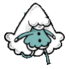
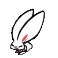

About
About Projects
Projects Books
Books Games
Games Stories
Stories Store
Store Notes
Notes How-to
How-to
Malisse is a two-player cooperative game played with two controllers, or single-player with a single controller. You could also play it two players on the same controller!
Play it.
Help Malisse along, make sure the path stays clear so that everyone, including the rabbit buddies, may pass unscathed!
Available for Windows and Mac. It was produced during ToJam 9 by Les Collegiennes in 2014. I mainly produced the animations, the logo and the 3D textures were done by Dom2d.